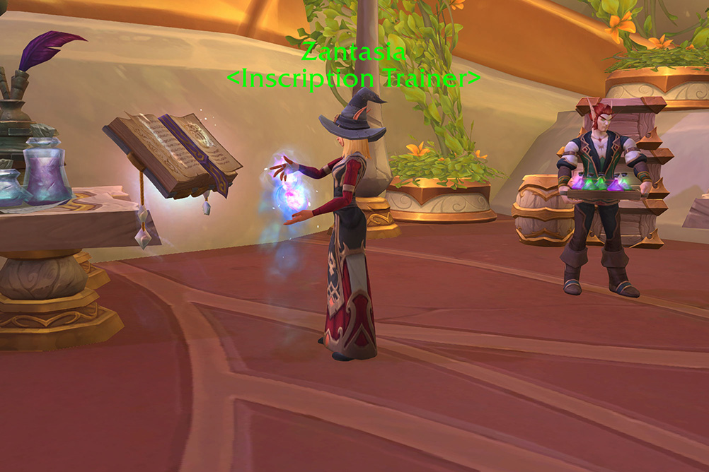
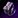
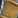

This Midnight Inscription leveling guide will show you the fastest and cheapest way to level Inscription from 1 to 100. I'll cover the trainer location, a full shopping list, and the best recipes to craft at every skill level. I recommend checking the shopping list before you start so you can buy everything at once from the Auction House.
This Midnight Inscription leveling guide will show you the fastest and cheapest way to level Inscription from 1 to 100. I'll cover the trainer location, a full shopping list, and the best recipes to craft at every skill level. I recommend checking the shopping list before you start so you can buy everything at once from the Auction House.
Inscription pairs best with Herbalism because you can farm all the herbs yourself instead of buying them. If you don't have Herbalism, you will need gold to buy herbs and inks from the Auction House.
If you're looking for a full overview of all Inscription recipes and knowledge sources, or want help picking a specialization, check out these guides:
Recipes & Knowledge Points Specialization Guide & Builds
Inscription Trainer Location
The Midnight Inscription trainer is Zantasia in Silvermoon City. Talk to her to learn Inscription and pick up new recipes as you level up.

Shopping List
This is the list of materials needed to level Inscription to 100.
- 360x Tranquillien Bloom
- 100x
 Argentleaf
Argentleaf - 90x
 Mana Lily
Mana Lily - 90x
 Sanguithorn
Sanguithorn - 65x
 Azeroot
Azeroot - 2x

Duskshrouded Stone - 2x
 Petrified Root
Petrified Root - 4x
 Mote of Primal Energy
Mote of Primal Energy - 5x
 Mote of Pure Void
Mote of Pure Void - 2x
 Mote of Light
Mote of Light - 7x
 Mote of Wild Magic
Mote of Wild Magic
Leveling Midnight Inscription
1 - 20
Use  Midnight Milling in your profession spell book to mill these herbs:
Midnight Milling in your profession spell book to mill these herbs:
- 360x Tranquillien Bloom
- 100x Argentleaf
- 90x Mana Lily
- 90x Sanguithorn
20 - 30
Craft the inks in the same order as they are listed.
- 11x
 Munsell Ink - 33x Thalassian Songwater, 220x Powder Pigment, 110x Sanguithorn Pigment, 55x Mana Lily Pigment
Munsell Ink - 33x Thalassian Songwater, 220x Powder Pigment, 110x Sanguithorn Pigment, 55x Mana Lily Pigment - 12x
 Sienna Ink - 36x Thalassian Songwater, 240x Powder Pigment, 120x Argentleaf Pigment, 60x Mana Lily Pigment
Sienna Ink - 36x Thalassian Songwater, 240x Powder Pigment, 120x Argentleaf Pigment, 60x Mana Lily Pigment
Thalassian Songwater and 
Keep the inks, you will use them later.
Inscription Specializations
When you hit 25, you will unlock Inscription specializations. Be sure to learn Calm Hands as your first specialization! This will teach you the  Thalassian Treatise on Inscription recipe that you will use for leveling later.
Thalassian Treatise on Inscription recipe that you will use for leveling later.
You'll eventually be able to learn all four specializations, so there's no need to worry about your initial choice. You'll need 50 skill points to unlock the second specialization, 60 for the third and 75 for the fourth.
I suggest checking out my Midnight Inscription Specialization Guide. It covers every specialization in detail with example builds to help you get started.
Midnight Inscription Specialization Guide and Builds
30 - 35
Craft these four for the first-craft bonuses.
- 1x
 Faunatender's Baton - 1x Thalassian Songwater, 8x Azeroot
Faunatender's Baton - 1x Thalassian Songwater, 8x Azeroot - 1x
 Floratender's Crutch - 1x Thalassian Songwater, 8x Azeroot
Floratender's Crutch - 1x Thalassian Songwater, 8x Azeroot - 1x
 Rootwarden's Lamp - 1x Thalassian Songwater, 8x Azeroot
Rootwarden's Lamp - 1x Thalassian Songwater, 8x Azeroot - 2x
 Soul Cipher - 2x Mote of Pure Void, 2x Mote of Light, 2x Duskshrouded Stone, 2x Munsell Ink, 2x Sienna Ink
Soul Cipher - 2x Mote of Pure Void, 2x Mote of Light, 2x Duskshrouded Stone, 2x Munsell Ink, 2x Sienna Ink
35 - 42
In your Profession window, click Filter and tick "First Craft Bonus". This will only show recipes that still give the first-craft bonus.
First-craft everything in your profession book one by one. Skip crafting  Thalassian Treatise on Inscription for now.
Thalassian Treatise on Inscription for now.
- 1x Codified Azeroot - 1x Soul Cipher, 8x Azeroot, 1x Mote of Primal Energy, 1x Mote of Wild Magic
- 1x
 Faunatender's Trust - 8x Azeroot
Faunatender's Trust - 8x Azeroot - 1x Hobbyist Alchemist's Mixing Rod - 10x Azeroot, 1x Sienna Ink
- 1x
 Hobbyist Rolling Pin - 10x Azeroot, 1x Sienna Ink
Hobbyist Rolling Pin - 10x Azeroot, 1x Sienna Ink - 1x
 Hobbyist Scribe's Quill - 5x Azeroot, 1x Munsell Ink, 1x Sienna Ink
Hobbyist Scribe's Quill - 5x Azeroot, 1x Munsell Ink, 1x Sienna Ink - 1x
 Thalassian Missive of the Aurora - 2x Munsell Ink, 2x Sienna Ink, 1x Mote of Primal Energy
Thalassian Missive of the Aurora - 2x Munsell Ink, 2x Sienna Ink, 1x Mote of Primal Energy - 1x
 Thalassian Missive of the Feverflare - 2x Munsell Ink, 2x Sienna Ink, 1x Mote of Primal Energy
Thalassian Missive of the Feverflare - 2x Munsell Ink, 2x Sienna Ink, 1x Mote of Primal Energy - 1x
 Thalassian Missive of the Fireflash - 2x Munsell Ink, 2x Sienna Ink, 1x Mote of Primal Energy
Thalassian Missive of the Fireflash - 2x Munsell Ink, 2x Sienna Ink, 1x Mote of Primal Energy - 1x
 Thalassian Missive of the Harmonious - 2x Munsell Ink, 2x Sienna Ink, 1x Mote of Pure Void
Thalassian Missive of the Harmonious - 2x Munsell Ink, 2x Sienna Ink, 1x Mote of Pure Void
Equip the  Hobbyist Scribe's Quill you just crafted.
Hobbyist Scribe's Quill you just crafted.
42 - 45
Now click the little red "X" in the Filter to clear your filters, and you will see all recipes again.
If you are already at 45, you can skip this part. If you are lower, craft more Treatises until you hit 45.
3x  Thalassian Treatise on Inscription - 9x Lexicologist's Vellum, 3x Mote of Wild Magic, 3x Munsell Ink, 3x Sienna Ink
Thalassian Treatise on Inscription - 9x Lexicologist's Vellum, 3x Mote of Wild Magic, 3x Munsell Ink, 3x Sienna Ink
Don't use the treatise yet! If you put 10 points into the Calm Hands specialization later, you will get 2 knowledge instead of one. It's worth saving it until you decide on your specialization path.
45 - 51
Learn new recipes from the trainer, then craft these:
- 1x Thalassian Missive of the Peerless - 2x Munsell Ink, 2x Sienna Ink, 1x Mote of Pure Void
- 1x
 Thalassian Missive of the Quickblade - 2x Munsell Ink, 2x Sienna Ink, 1x Mote of Pure Void
Thalassian Missive of the Quickblade - 2x Munsell Ink, 2x Sienna Ink, 1x Mote of Pure Void - 3x
 Thalassian Treatise on Inscription - 9x Lexicologist's Vellum, 3x Mote of Wild Magic, 3x Munsell Ink, 3x Sienna Ink
Thalassian Treatise on Inscription - 9x Lexicologist's Vellum, 3x Mote of Wild Magic, 3x Munsell Ink, 3x Sienna Ink
Then learn the Vantus Rune recipe from the trainer at skill 50 and craft one to get your first-craft bonus.
1x  Vantus Rune: Radiant - 1x Soul Cipher, 2x Petrified Root
Vantus Rune: Radiant - 1x Soul Cipher, 2x Petrified Root
51 - 100
As you craft the  Thalassian Treatise on Inscription, you'll start discovering Treatises for other professions (10 total). Both the Inscription Treatise and the other Treatises will continue to grant skill points all the way up to 100. First-craft each one as you discover it for the bonus skill.
Thalassian Treatise on Inscription, you'll start discovering Treatises for other professions (10 total). Both the Inscription Treatise and the other Treatises will continue to grant skill points all the way up to 100. First-craft each one as you discover it for the bonus skill.
Each Treatise costs 1x  Munsell Ink, 1x
Munsell Ink, 1x  Sienna Ink, and 1x Mote (Wild Magic for the Inscription Treatise, other Mote types for other professions).
Sienna Ink, and 1x Mote (Wild Magic for the Inscription Treatise, other Mote types for other professions).
Start with the Treatise on Inscription until you discover a useful recipe for your second profession or alts. Once you do, switch to crafting Treatises that you or your alts can actually use. Treatises are Warbound, so you can mail them to your other characters. I wouldn't recommend making all 60 from Inscription alone, as it would take over a year to use them all.
Buying inks from the Auction House is usually faster and cheaper than crafting them yourself from pigments. To reach level 100, you'll likely need to craft around 70 Treatises in total. The recipes will turn green for the last 10 points, so the exact number depends on your luck with skill gains.
Alternative for the last few points
The last few points can be a bit slow if you are unlucky with skill gains. If you have any weapon recipes unlocked from specializations, you can complete a few crafting orders instead. I'd recommend stopping at 91, 94, or 97. Each weapon recipe gives 3 skill points, so you only have to complete 1-3 of them.
All of these recipes require a Spark, a Bind on Pickup (BoP) crafting reagent that cannot be purchased from the Auction House. Since you can only obtain one Spark every two weeks, you should use the crafting order system to level with these recipes.
| Item | Recipe Source |
|---|---|
| Specialization: Blueprints - Staves (5) | |
| Specialization: Blueprints - Staves (15) | |
| Specialization: Blueprints - Lamps and Lanterns (15) | |
| Specialization: Blueprints - Bows (15) |
Once you get the recipes from specializations, you can start looking for Crafting Orders.
Patron Orders
Fortunately, the new Patron crafting orders make leveling a bit easier. You will frequently receive epic weapon crafting orders, though you may not be able to complete some of them until you acquire more knowledge points.
These orders are player-specific, so other players can't complete them. Consider them like Personal Orders sent to you by NPCs. However, they are randomly generated, so it's not guaranteed that you will receive orders for recipes you can currently craft.
Public Orders
When you open the Crafting Orders tab, make sure to hit "Search" in the top left corner on the Public Orders tab, they won't load automatically. You probably won't see many crafting orders because players immediately complete them when they are posted.